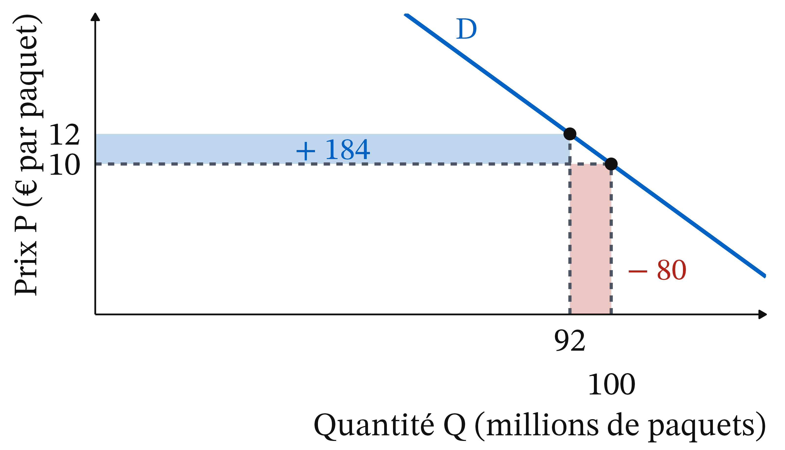
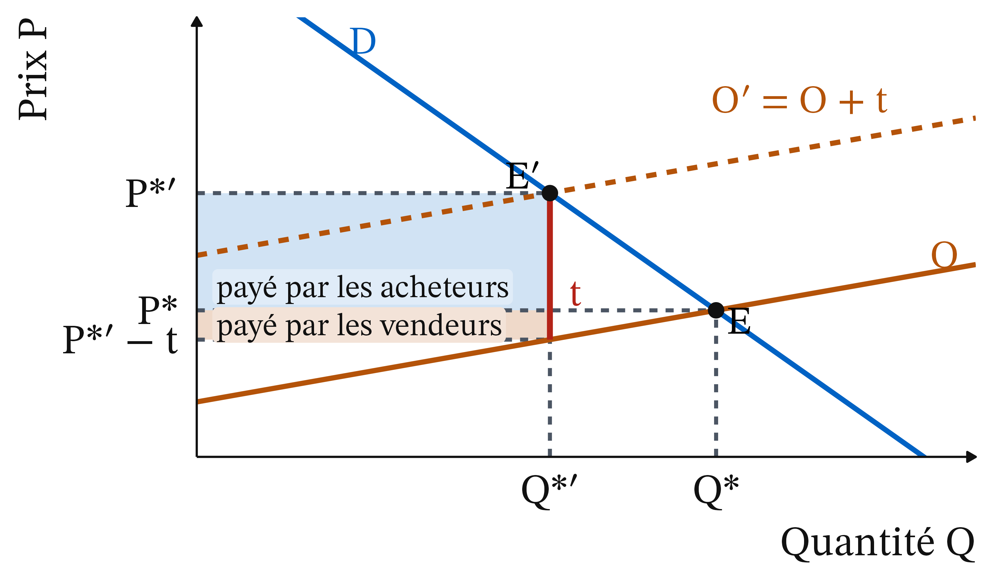
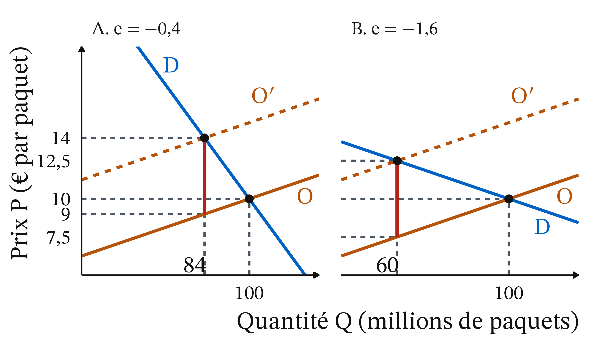
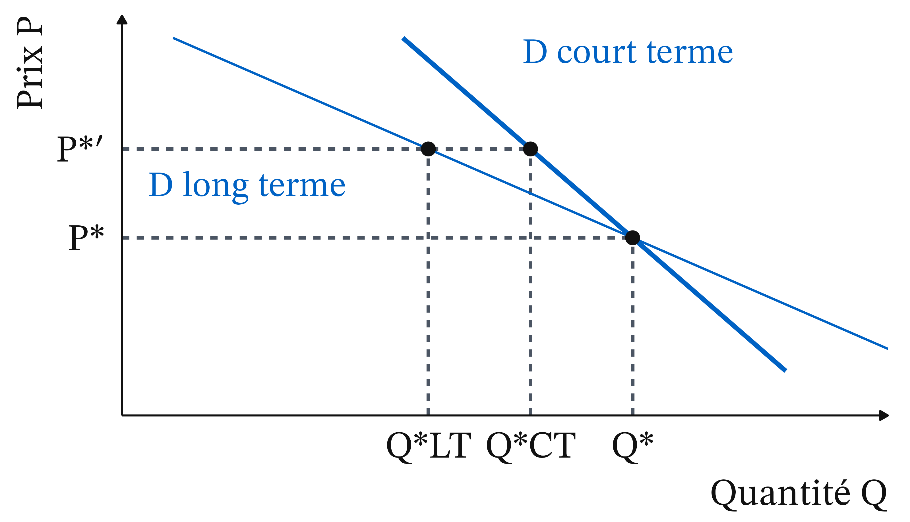
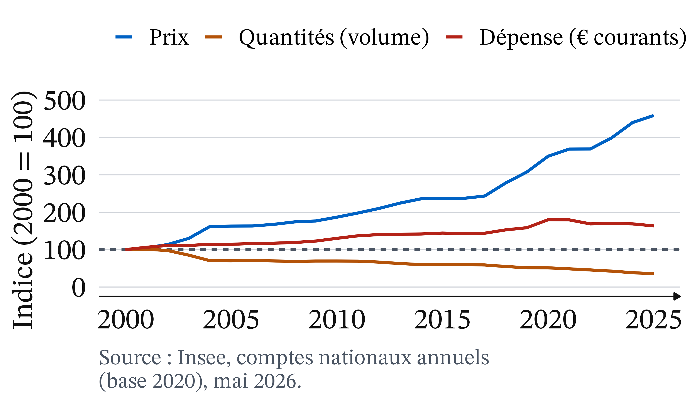
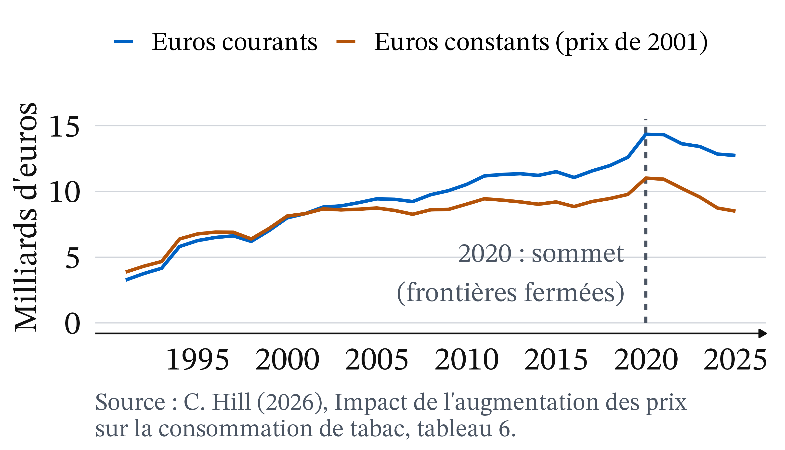

Un paquet de cigarettes coûte 13,50 € en février 2026
Le prix moyen était de 3,20 € en 2000 et de 13 € en 2025.
(C. Hill, 2026 ; I. Obradovic, The Conversation, 25/07/2026)
Pourtant, les ventes des buralistes reculent de 8,2 % en 2025
Métropole : 30 165 tonnes vendues, contre 32 846 en 2024
Fumeurs quotidiens : environ 25 % des 18-75 ans en 2014, 18 % en 2024
Décès prématurés attribués au tabac : 68 000 en 2023
(OFDT, AFP, 28/05/2026 ; Santé publique France, citée par La finance pour tous, 24/07/2026)
Augmenter le prix fait-il arrêter de fumer ? Trois questions en une
De combien les ventes baissent-elles ? L’élasticité.
Qui paie la taxe ? L’incidence fiscale.
Un fumeur dépendant réagit-il au prix ? L’addiction.
Rappel : cinq notions suffisent pour la séance
Élasticité e = ΔQ (%) ÷ ΔP (%), négative ; |e| < 1 : peu élastique
Déplacer une courbe : O → O′
Accise : impôt indirect sur un produit précis
Externalité : effet sur les autres, non compensé
Positif décrit, normatif juge
Marshall : l’élasticité mesure la sensibilité de la demande au prix
Marshall (1890) : l’élasticité dépend des substituts et du temps laissé aux acheteurs.
Si la demande est peu élastique, la dépense monte avec le prix
Définition 1 (Dépense totale) Dépense = P × Q, aussi la recette des vendeurs. Prix en hausse : |e| < 1, la dépense augmente ; |e| > 1, elle diminue.
Pour le tabac, e est compris entre −0,5 et −0,3
Une hausse de 10 % du prix fait baisser les ventes de 3 à 5 %.
(Santé publique France ; La finance pour tous, 24/07/2026 ; Hill, 2026)
Quand le prix monte, on gagne un rectangle et on en perd un

Figure 1
Même hausse de 20 %, deux histoires selon l’élasticité
e = −0,4 : Q −8 %, 92 millions ; dépense 1 000 → 1 104 M€ (+10,4 %)
e = −1,5 : Q −30 %, 70 millions ; dépense → 840 M€ (−16 %)
Peu élastique : la hausse frappe surtout le budget. Élastique : elle réduit surtout la consommation.
Jenkin : celui qui verse la taxe n’est pas celui qui la paie
Avant 1885 · photographie prêtée par Mrs Dew Smith, frontispice du Memoir de R. L. Stevenson, domaine public, Wikimedia Commons
Fleeming Jenkin (1872), Proceedings of the Royal Society of Edinburgh · précurseur de l’analyse néoclassique. La charge dépend de la forme des deux courbes, non de celui qui verse.
Incidence fiscale : répartition réelle de la charge entre acheteurs et vendeurs.
Une taxe t déplace l’offre vers le haut : O devient O′ = O + t

Figure 2
La charge retombe sur le côté du marché le moins élastique
Le fumeur dépendant a peu de substituts à court terme : il est en mauvaise position pour échapper à la taxe.
Une taxe de 5 € : les acheteurs en paient 4, les vendeurs 1
Offre Q = 16 P − 60 ; demande A : Q = 140 − 4 P ; P* = 10 €, Q* = 100
Offre taxée : Q = 16 P − 140
P*′ = 14 €, Q*′ = 84, vendeur : 9 €
Recette : 5 × 84 = 420 M€
Avec une demande plus élastique, la taxe est partagée moitié-moitié

Figure 3
Piège : « le buraliste encaisse la taxe, donc c’est lui qui la paie »
C’est faux. Si l’acheteur verse la taxe, la demande se déplace vers le bas de 5 € : même équilibre, vendeur 9 €, acheteur 14 €. Seules les élasticités décident.
Pause : 15 minutes
Une demande peu élastique rapporte plus, mais change peu les comportements
Recette : 420 millions (A) contre 300 millions (B). Faire baisser la consommation et financer l’État sont deux objectifs en partie contradictoires.
Sur un paquet à 13,50 €, l’État prend 82,5 %
Accises : 7,43 + 1,466 ≈ 8,89 €
TVA : 13,50 ÷ 6 = 2,25 €
Total des taxes : ≈ 11,14 €
Buraliste : ≈ 1,39 € ; fabricant : ≈ 0,97 €
(Hill, 2026, tableaux 5.2 et 6 ; taux au 1er janvier 2026)
Becker et Murphy : un fumeur qui anticipe réagit aux prix futurs
2008 · MAR, domaine public, Wikimedia Commons
Gary S. Becker et Kevin M. Murphy (1988), Journal of Political Economy, 96(4) · école de Chicago. Fumer aujourd’hui augmente l’envie de fumer demain ; une hausse durable et annoncée réduit la consommation.
L’addiction rend la demande plus élastique à long terme

Figure 4
Gruber et Kőszegi : beaucoup voudraient arrêter et n’y arrivent pas
2014 · Commission de surveillance de la Chambre des représentants des États-Unis, domaine public, Wikimedia Commons
Jonathan Gruber et Botond Kőszegi (2001), QJE, 116(4) · économie comportementale. La consommation baisse dès le vote d’une taxe ; elle aide à tenir ses résolutions.
Internalité : coût qu’on s’impose à soi-même dans le futur, sans en tenir compte au moment de choisir.
En 2025, le prix du tabac a été multiplié par 4,6 depuis 2000 et les quantités divisées par 2,8

Figure 5
Dépense : +64 %. Prix réel ×2,9, dépense réelle +3 % (Insee ; Eurostat, IPCH, février 2026). Corrélation, pas expérience. Source : Insee, comptes nationaux base 2020, 29/05/2026.
Les ventes des buralistes ne sont pas la consommation
Tabac à rouler : +4,2 % pour +10 % sur les cigarettes (jusqu’en 2013)
17,7 % en moyenne, selon une étude citée par le ministère, des produits échappent aux buralistes
Saisies de cigarettes : +24,5 % en 2025
(Hill, 2026 ; JO Sénat, 26/02/2026 ; AFP, 28/05/2026)
Depuis 2019, la recette stagne en euros courants et baisse de 13 % en euros constants

Figure 6
Source : C. Hill (2026), tableau 6. 2020, gonflé par la fermeture des frontières, est une mauvaise base.
Piège : l’élasticité mesurée sur les ventes légales surestime l’effet sur la santé
Si une partie des fumeurs achète en Belgique ou au marché noir, les ventes baissent plus que la consommation. On prend pour un arrêt du tabac ce qui est en partie une fuite, dont le coût pour les recettes passe inaperçu.
Les jeunes gagnent sans doute le plus en santé, la taxe pèse le plus sur les budgets modestes
Lycéens fumeurs quotidiens : 30,8 % en 2010, 5,6 % en 2024
À 17 ans (ESCAPAD, mars 2022 ; autre enquête) : voie professionnelle 22,1 %, générale ou technologique 10,1 %
Taxe régressive ; réaction plus forte des modestes non montrée
(AFP, 28/05/2026 ; The Conversation, 25/07/2026 ; Hill, 2026)
Territoires, genres, vendeurs : des gains qui s’effritent
 Avant 1885 · photographie prêtée par Mrs Dew Smith, frontispice du Memoir de R. L. Stevenson, domaine public, Wikimedia Commons
Avant 1885 · photographie prêtée par Mrs Dew Smith, frontispice du Memoir de R. L. Stevenson, domaine public, Wikimedia Commons 2008 · MAR, domaine public, Wikimedia Commons
2008 · MAR, domaine public, Wikimedia Commons 2014 · Commission de surveillance de la Chambre des représentants des États-Unis, domaine public, Wikimedia Commons
2014 · Commission de surveillance de la Chambre des représentants des États-Unis, domaine public, Wikimedia Commons